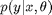
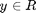
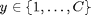
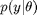
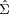
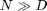
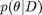
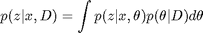
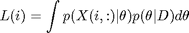

Tutorial on pmtk3
This page was auto-generated by publishing http://pmtk3.googlecode.com/svn/trunk/docs/tutorial/tutFoundations.m.
Contents
Overall design of PMTK3
PMTK3 has an object oriented design. That is, it can be thought of as defining a series of 'classes', representing different kinds of probabilistic models. Each class supports various 'methods', which perform certain operations. These methods are often implemented in a functional way.
We don't actually use Matlab's object oriented system, because this does not work in Octave. In addition, some users find such code harder to understand, and it can be slower than non OO code. Instead, each model 'object' (an instance of a model 'class') is actually just a structure, containing various fields. And each method is just a regular function, whose name begins with the class name. The first argument to a method is a model struct.
As an example, below we create a 2d Gaussian model and then draw 5 samples from it
m = gaussCreate([0 0], eye(2)) setSeed(0); X = gaussSample(m, 5)
m =
mu: [0 0]
Sigma: [2x2 double]
modelType: 'gauss'
X =
-0.4326 -1.6656
0.1253 0.2877
-1.1465 1.1909
1.1892 -0.0376
0.3273 0.1746
The function 'gaussCreate' is called a constructor, since it creates an instance of the class. The function 'gaussSample' is a method. The methods that are supported depend on the type of model; details are given below.
To provide some overall structure, we group the model classes into two major types:
- unconditional / unsupervised
- conditional / supervised
These support different functions, as we explain below.
Conditional (supervised) models
This is a model of the form , where x is the set of covariats/ inputs, and y is the response. Currently we require y to be a scalar. If , we are performing regression; if , we are performing classification. We discuss supervised models in more detail here.
All conditional models should support the functions listed below. In the table, 'foo' is the name of the model class and '...' refers to optional or model-specific arguments (these will be explained later).
| Method | Description |
|---|---|
| m = fooCreate(...) | Constructor |
| m = fooFit(X, y, ...) | Constructor. Usually computes the MLE or MAP parameter estimate, using various priors and fitting algorithms. X is an N*D design matrix, where N is the number of training cases, and D is the dimensionality of the distribution being fit. y is the N*1 response vector. |
| [yhat, py] = fooPredict(m, X, ...) | The meaning of the outputs depends on the model class. For classification, yhat(i) = argmax p(y|X(i,:), m), and py(i,c) = p(y=c|X(i,:), m). (Note that some models cannot produce probabilistic outputs. In such cases, py may be undefined.) For regression, yhat(i) = E[y|X(i,:),m] and py(i) = Var[y|X(i,:), m]. |
Most of the work occurs inside the fitting function. See here for details.
Unconditional (unsupervised) models
An unconditional model is of the form , where y is potentially vector valued. Such models support the following functions, although in some cases, some functions may not yet have been implemented for a particular model class.
| Method | Description | m = fooCreate(...) | Constructor. Allows user to specify the parameters 'by hand', as well as specifying optional arguments to be used by fitting and/or inference routines. |
|---|---|
| m = fooFit(X, ...) | Constructor. Usually computes the MLE or MAP parameter estimate, using various priors and fitting algorithms. X is an N*D design matrix. For some models, X may contain NaN's, representing missing values. |
| X = fooSample(m, N) | X(i,:) = sample from model m, i=1:N |
| L = fooLogprob(m, X) | L(i) = log p(X(i,:)| m) For some models, X may contain NaN's, representing missing values. |
Unconditional models are subdivided into various subtypes, as follows:
- basic (standard parametric distributions e.g., Gauss)
- latent (mixture models, latent factor models, HMMs etc)
- graphical (models which require specifying a graph structure)
We discuss these below.
Basic models
Basic models support the functions listed above. We have already illustrated the gaussCreate constructor and gaussSample method. We now discuss some other methods.
First, as a piece of useful shorthand, some widely used basic models (such as Gaussian) let you write fooSample(params,N) instead of fooSample(fooCreate(params),N). For example
setSeed(0); gaussSample(zeros(2,1), eye(2), 5)
ans =
-0.4326 -1.6656
0.1253 0.2877
-1.1465 1.1909
1.1892 -0.0376
0.3273 0.1746
Now we illustrate model fitting. First we use MLE to fit a D=50 dimensional Gaussian to N = 1000 data points.
N = 1000; D = 50; X = rand(N,D); m = gaussFit(X);
Let us check that the resulting estimate matches the usual MLE formula:
assert(approxeq(m.mu, mean(X))) assert(approxeq(m.Sigma, cov(X, 1)))
Let us also check that  is well conditioned
cond(m.Sigma)
ans =
2.3152
Now consider what happens when N=50.
m2 = gaussFit(X(1:50,:)); cond(m2.Sigma)
ans = 1.1240e+017
We see that the resulting matrix is close to singular. MLE only works well when . In all other cases, we should use MAP estimation. We can do this as follows, using a simple vague data-dependent prior:
m3 = gaussFit(X(1:50,:), 'map');
cond(m3.Sigma)
ans = 177.0245
See shrinkCovDemo for a more extensive demo of regularized estimation of covariance matrices.
Now let us consider another useful operation: evaluating the log likelihood of a dataset:
L = sum(gaussLogprob(m3, X))
L = -2.8987e+007
These methods behave similarly on other models. A list of all the basic models can be found here. A complete list of the methods implemented by each basic class is shown here.
Latent variable models
A list of all the LVMs can be found here From a functional point of view, an LVM supports all the methods for a generic unconditional model, plus the following functions.
| Method | Description | [z, pz] = infer(m, X). | This is an unsupervised version of predict. If the LVM has discrete latent variables z, z(i) = argmax p(z|X(i,:), m) and pz(i,k) = p(z=k|X(i,:), m). If the LVM has continuous latent variables z, z(i,:) = E(z|X(i,:), m) and pz(i,:,:) = Cov(z|X(i,:), m). |
|---|---|
We discuss LVMs in more detail here.
Graphical models
A list of all the GMs can be found here From a functional point of view, a GM supports all the methods for a generic unconditional model, plus the following functions.
| Method | Description | [bel] = inferNodes(m, evidence). | Here bel{i}(k) is the probability node i is in state k,
given the evidence. The evidence can be specified
in several different ways. See
| yhat = map(m, evidence)
| Computes argmax p(y|ev, m), which is a (joint) posterior mode.
| Ghat = fitStruct(m, evidence)
| Find a MAP estimate of the graph structure (not yet implemented).
| |
|---|
We discuss graphical models in more detail here.
Summary of models and methods
A summary of the abstract classes and their main methods is shown below
 .
.
A summary of the concrete classes (which are leaves in the class hierarchy) is shown below.
 .
.
Bayesian methods
So far, we have been focusing on fitting models using ML or MAP parameter estimation. Furthermore, prediction and inference has used the plugin approximation, treating the parameters as known constants. PMTK3 has some limited support for Bayesian methods of model fitting/ prediction, as we now explain.
For supervised models, just use fooFitBayes which computes , and fooPredictBayes, which computes

For unsupervised models, instead of fooInfer use fooInferBayes, which computes

where z are the latent variables and x are the observed variables. Also, instead of fooLogprob use fooLogprobBayes, which computes

We will give examples of these methods later.
'Under the hood', things are a bit more complicated in the Bayesian context compared to MAP estimation, since we don't store model parameters but a posterior distribution over model parameters. Furthermore, the form of this posterior may differ across inference algorithms, e.g., it might be a Gaussian approximation, or a bag of samples. However, from a user's point of view, these things should not matter.
Passing in optional arguments
Many functions take a large number of optional arguments. For example, linregFit (which fit a linear regression model) has the following interface
[model] = linregFit(X, y, varargin)
varargin represents a variable number of arguments. The optional arguments, and their default values, are printed when you type help('linregFit').
help linregFit
Fit a linear regression model by MLE or MAP estimation INPUTS X ... N*D design matrix y ... N*1 response vector OPTIONAL INPUTS: regType ... L1, L2, none, scad (only used if likelihood is 'gaussian') likelihood ... ['gaussian'], 'student', 'huber' lambda ... regularizer fitOptions ... optional args (a cell array) to fitFn preproc ... a struct, passed to preprocessorApplyToTtrain OUTPUTS: model ... a struct, which you can pass directly to linregPredict %
The meaning of these arguments will be explained later.
There are two ways to specify the optional arguments: 1) a set of name, value pairs eg.
clear all N=10; D = 2; X = rand(N, D); y = rand(N,1); m1 = linregFit(X, y, 'regType', 'L2', 'lambda', 2)
m1 =
lambda: 2
w: [3x1 double]
sigma2: 0.0022
preproc: [1x1 struct]
modelType: 'linreg'
likelihood: 'gaussian'
2) a struct, where the fields are named after the optional arguments, eg.
s.regType = 'L2';
s.lambda = 2;
m2 = linregFit(X, y, s)
m2 =
lambda: 2
w: [3x1 double]
sigma2: 0.0022
preproc: [1x1 struct]
modelType: 'linreg'
likelihood: 'gaussian'
As a sanity check, let us check these are equal
assert(approxeq(m1.w, m2.w))
Internally, these optional arguments are processed using process_options.m, written by Mark Paskin, and prepareArgs.m, written by Matt Dunham. For more detals, see this entry in our Matlab tutorial.
Generally useful Matlab functions
PMTK uses a large number of functions that are useful for many different purposes outside of machine learning. Many of these are stored in our matlabTools site. Others are built-in to Matlab, as explained in our Matlab tutorial. We mention just a few of the most useful ones below
- whoCallsMe('foo'): list all files that call foo.m
- wwhich('foo*'): which with wildcards. This prints full filenames of all files starting with the string 'foo'. Can also use wwhich('*foo*') etc.
- edit('foo'): open foo.m in editor, lets you look at source code (be careful not to change things accidently!). This also works for built-in Matlab functions.
- help('foo'): prints any initial documentation for foo.m that the implementer may have provided; all builtin Matlab functions are properly documented. Unfortuntately that is not the case for all the PMTK functions... but you can always read the source.